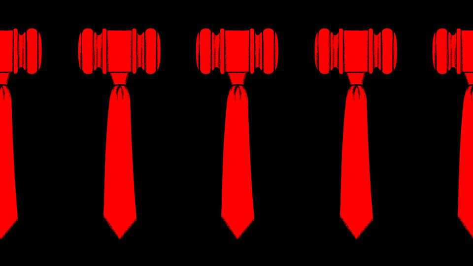

Donald Trump’s transformation of the Department of Justice will be hard to undo
Political prosecutions are just part of a more radical reinvention
July 16th 2026

Anyone who has ever worked as a lawyer for Donald Trump makes a bet. There is the possibility that you, too, will run afoul of the law—eight of the president’s lawyers have themselves been indicted. Alternatively, your work might pay dividends. Such was Todd Blanche’s calculus three years ago when his white-shoe firm gave him a choice: represent Mr Trump, then a candidate and a criminal defendant, or remain a partner. Mr Blanche chose Mr Trump. Now the president has selected him to be America’s top cop.
On July 15th the Senate began hearings to consider Mr Blanche’s nomination to lead the Department of Justice (DoJ). Whether lawmakers confirm him as attorney-general will test their willingness to endorse Mr Trump’s legal agenda, but even a rebuke would be only symbolic. The president will still get his way at the DoJ; Mr Blanche can stay in the job on an acting basis for months and be replaced by someone similar after.
With or without Mr Blanche, the president will continue to lead a transformation of dramatic scale. With warrants and subpoenas, the DoJ is pursuing Mr Trump’s critics and his hobby-horses, from political adversaries to election fraud to leaks in the press. The number of lawyers has dwindled by 20%; former prosecutors point to an incompatibility between the president’s agenda and the fair application of law. The DoJ is retreating from certain types of criminal enforcement. And, increasingly, judges are telling government lawyers that they cannot be taken at their word.
The DoJ’s duties, at least as historically defined, include enforcing the law and defending the government in court. Ever since Richard Nixon urged his attorney-general to interfere with an investigation, politicians of both parties have generally agreed that the DoJ should operate at some distance from the presidency. Mr Trump has bucked that consensus, claiming that Democrats weaponised the law against him. Joe Biden’s DoJ indicted him twice, elected Democratic district-attorneys indicted him twice more and Letitia James, New York’s attorney-general, sued him in civil court.
Pam Bondi, Mr Trump’s first attorney-general, was fired in April for being insufficiently aggressive. Mr Blanche told the Senate this week that he is not the president’s “yes man”. But shortly after assuming his current post, Mr Blanche was touting a second indictment against James Comey, a former FBI director and antagonist of the president. Mr Comey had posted a photo of seashells on a beach arranged like “86 47”. To “86” someone means to get rid of them; Mr Trump is the 47th president. The DoJ contends that Mr Comey was threatening to kill Mr Trump.
This prosecution is almost certain to fail, just like the president’s cases against Ms James; Jerome Powell, the former chair of the Federal Reserve; and six Democratic lawmakers. Last month a court tossed subpoenas targeting Tim Walz, Minnesota’s governor, and other Democratic officials in that state. The judge wrote that the subpoenas were “not issued to investigate, but to harass, coerce and retaliate” for the officials’ refusal to aid the president’s immigration crackdown.
Mr Trump complements prosecutions of political foes with lenient treatment of his friends, through pardons and dropped charges. Last year political appointees at the DoJ ordered prosecutors to abandon a corruption case against Eric Adams, then New York’s mayor. Unlike Mr Walz, he had agreed to co-operate on immigration. A judge in New York wants to know whether a quid pro quo inspired the DoJ to drop fraud charges against Gautam Adani, an Indian billionaire who has promised to invest $10bn in America.
Mr Trump had sought to reward allies most explicitly through a $1.8bn fund for supposed victims of government lawfare. Even Republican senators balked at that; in June Mr Blanche said he had given up the idea. But it loomed over his confirmation hearing, with John Cornyn, a Republican senator, observing that his answers “don’t lead inevitably to the conclusion that it’s dead”.
The DoJ is vast; last year it charged 81,000 people. Politicised probes mark a radical departure from past norms, but they are not enough to upend that work. Yet broader change is underway, too, with the department itself depleted and redirected, at remarkable speed.
Mass attrition means that some of the most experienced lawyers have left, often for better pay in the private sector. A former prosecutor in the Virginia office that first indicted Mr Comey recounts how, after charges were issued, nearly everyone in his unit started looking for new work. “These people have job options.” Now the DoJ is struggling to fill its ranks, lowering hiring standards to take applicants straight from law school and offering some recruits $25,000 signing bonuses.
Units specialising in cryptocurrency fraud and corruption by public officials have been gutted. (As it happens, Mr Trump made more than $1.4bn from cryptocurrency last year.) The group focused on counterintelligence and enforcing export controls has warned Congress of “unprecedented personnel constraints”, with a 40% drop in prosecutors from a year and a half ago. Up to a third of the counterterrorism section has left, says a former prosecutor in that unit. The FBI, which sits within the DoJ, has lost about 300 special agents who worked on national security.
The DoJ’s national-security division has expertise that most prosecutors lack, in handling classified information and charging complex statutes. They sift through dozens of FBI referrals and decide which to pursue. “What feels real versus which ones are idle chatter? When is the right time to disrupt a plot? Do we go now? Prosecutors learn that only by working these cases over many years,” says one who left last year.
Fewer resources mean less enforcement in some domains. White-collar defence lawyers remark how work has slowed. Last year the number of financial-fraud indictments out of DoJ headquarters and the US attorney’s office in Manhattan fell by 30% from the ten-year average. Indictments are a lagging indicator of enforcement activity. Subpoenas of financial firms, which precede them, are “not happening, basically,” says a white-collar lawyer in New York, who expects even fewer indictments to come. “Nobody’s investigating those things.” Cases targeting political graft have largely dried up. Mr Trump is notably lax about that, having granted clemency to at least 20 politicians convicted of self-dealing over his two terms.
Instead the DoJ has made a big show around the president’s bugbears: health-care and benefits fraud; anything connected to cartels; transgender care; diversity, equity and inclusion; and election fraud. Recently the FBI dispatched 260 analysts to investigate debunked claims of vote-rigging in the 2020 election in Georgia, which Mr Trump maintains he won. In January the FBI seized records related to that race in Georgia’s Fulton County. Last week a judge quashed the DoJ’s subpoena seeking names of poll workers there: an “overly broad fishing expedition is bad and is not allowed”, he said.
The DoJ will be at the tip of the spear if Mr Trump attempts to intervene in the midterm elections in November. Ominously, it has all but shut the unit that normally monitors election-related crimes. A prosecutor who left that section last year says he thinks the administration is “taking steps to be in a position to put its thumb on the scale in 2026 or 2028”.
Election-year training for FBI agents and DoJ staff, once mandatory, has been cancelled. The department seems to have no intention to stand up the National Election Command Post, which normally monitors irregularities. Instead, election deniers populate the DoJ, including several who worked to overturn the 2020 result. Recently they threatened to prosecute election officials who let non-citizens vote.
No issue has consumed the attention of the Trump administration like immigration. By September the FBI had diverted a fifth of its roughly 14,000 agents to immigration enforcement. What is striking is not that the president has made immigration a priority—he said he would do as much—but the manner in which DoJ lawyers are pursuing those cases.
In the autumn Mr Blanche showed up in Chicago, the site of a surge of agents dubbed “Operation Midway Blitz”, and decried “an organised effort by domestic terrorists to actually injure and hurt” those agents. Then his deputy told prosecutors to “go big and go loud” against protesters.
A prosecutor in Chicago who left earlier this year says that every unit there, including ones focused on cyber and national-security crime, was dragooned into protester cases, which became a “dreaded thing”. He says the pressure from the front office to file charges was so great that prosecutors had to present a compelling argument not to do so. That is the inverse of how decisions are usually made.
Agents arrested nearly 4,000 immigrants during Midway Blitz. The crackdown in Chicago also became a stark example of how to drive away lawyers. In the US attorney’s office, which has seven criminal sections, each chief serving at the start of Midway Blitz has quit. Seven of their 15 deputies and at least a quarter of the 90 or so staff prosecutors have left, too.
Across the country, there have been hundreds of shaky cases brought against protesters. Many collapse before trial. A jury rebellion awaits those that do make it that far. Ten of 13 resulted in an acquittal as of March, according to Steven Salky, a defence lawyer who tracks unusual charging decisions. By contrast, across all federal trials last year, the acquittal rate was 12%.
Some cases have veered into the absurd. A jury took 35 minutes to acquit a man accused of pointing a laser at the president’s helicopter. Once unusual practices are more common. In October prosecutors charged six Democratic activists and politicians in Chicago with conspiring to impede a federal agent, in a case known as the “Broadview Six”. After a judge reviewed transcripts from the grand-jury sitting—held in secret, without judges or defence lawyers—she said she had never seen such misbehaviour by prosecutors. Among other no-nos, they had dismissed sceptical jurors (including one who called the case “a crock of shit”) who might have been unlikely to return an indictment. In May prosecutors dropped the case.
A consequence of all this is that the DoJ is losing credibility in the courts. Increasingly judges are calling out lapses by government lawyers, saying they cannot take them at face value. The judge overseeing the Broadview Six case said she believed that “most government attorneys are doing the best they can to do the right thing”. Then she added: “That trust has been broken.” More judges are now requiring depositions and documents to verify that the government’s claims are true, and threatening sanctions when its lawyers obfuscate or fail to comply. In the first 14 months of Mr Trump’s second term, according to Just Security, a site for legal commentary, the DoJ gave courts inaccurate information in nearly 100 instances.
The problem is acute in immigration cases. The administration’s mass-detention policy led to a twentyfold spike in “habeas” petitions by detained immigrants suing for release between 2024 and 2025. Just Security found nearly 800 instances of non-compliance with court orders in habeas cases, and 13 sanctions and contempt-of-court findings against DoJ lawyers. The administration’s response has been to label any judge who disagrees with it a “rogue activist”. Mr Blanche has called it a “war” on the judiciary.
Seen one way, that fighting talk reflects something positive: the guardrails in the judicial system holding up, to the administration’s dismay. Already the department’s alumni are asking what it will take to reconstitute it when Mr Trump leaves office. A former prosecutor says he and his former colleagues want to return. Still, the appeal of the department diminishes somewhat with the prospect that the next person overseeing it may sack you, or harness the law for their personal ends. For decades the DoJ enjoyed some protection from the politics that have fractured America. That era seems over. ■
Stay on top of American politics with The US in brief, our daily newsletter with fast analysis of the most important political news, and Checks and Balance, a weekly note that examines the state of American democracy and the issues that matter to voters.